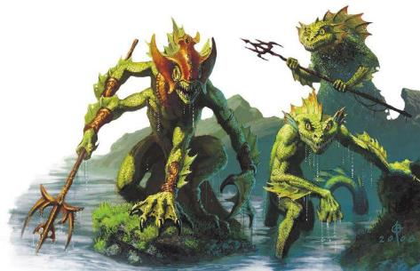

任何一个风暴湾的水手都可以告诉你沙华鱼人崇拜吞噬者，他们称他为沙尔贡。但这只是故事的一部分。沙华鱼人的风暴祭司讲述了诸神和恶魔在第一纪元如何战斗的通行故事，但他们的故事并没有结束于恶魔大君的封印。恶魔被击败后，天命诸神决心取而代之，如暴君般君临恶魔过去的领地。沙华鱼人沙尔贡，勇敢的猎人和强大的战士，追踪着自然界的天命之神Arra'ai和Ba'alor，将他们困住困住并吞噬了他们，将他们的力量据为己有。其他天命之神很愤怒，但没有人能够战胜沙尔贡，而他已经拥有了两个神的力量，所以天命诸神逃亡了上层世界和更远的地方，并至今，当强大的猎人靠近时，他们都会逃走。沙尔贡制定了世界的法则，而些法则是残酷的。生命是一场无休止的斗争。弱者会在风暴中灭亡或者被强者吞噬。那些狡猾且勇敢者可以征服世界本身，而作为胜利者有权吞噬他们的敌人。永恒主宰的鱼人将这些信息铭记于心。没有他们无法征服的敌人，没有他们不具备的力量。他们用克拉肯的骨骸和卡拉萨的血肉打造出了一个帝国，一个永远不会终结的霸权。如果永恒主宰希望征服地表世界，它可以轻而易举地做到--或者沙华鱼人是这么说的。但目的是什么呢？"干皮佬 "是可怜的野蛮人，有着脆弱的身体和心灵。永恒主宰寻求的是更大的猎物，配得上萨尔贡的力量。有些计划吞噬恶魔大君，有些则计划征服世界之外的世界。这是纯粹的傲慢吗？ 还是说永恒主宰或许真能掌控现实世界本身？
沙华鱼人居住在雷霆海的海底。他们能不可思议地迅速适应压力变化，从深处升到海面而不会受到任何负面影响。黑暗视觉让他们即使在最黑暗的地方也能视物，尽管他们还是需要一点光亮来达到最大效率。他们的皮肤像皮甲一样坚硬，尖爪利牙也是致命的武器。学者们知道到沙华 "突变体 "的存在，但很少有人意识到这些并不是随机的突变，而是笼罩着每个沙华鱼人的育种系统的最显眼产物，从他们从产卵池孵化出的那一刻起，年轻的沙华鱼人就开始接受定量饮食、神秘仪式和专门训练以将他们塑造成预定的目标模样。沙华鱼人不是克隆人，但沙华战士被赋予了力量和愤怒，而沙华刺客则是敏捷和致命的，这都是根据设计造成的。沙华鱼人创造了他们自己的术士。所有的沙华鱼人都要经历这个最初的塑造过程，那些证明自己有价值的人可以走得更远，经历四臂男爵和马林提（Malenti）等沙华精锐的转变仪式。但这也只是沙华魔法育种的两个例子。在第八章中介绍的沙阿贡之爪则是另一个魔育沙华精锐的例子。
沙华鱼人吃什么？他们想吃什么就吃什么，而且很多时候是，想吃谁就吃谁。沙华鱼人是贪婪的杂食者，他们通过食用来证明他们对万事万物的支配。食物给sahuagin带来了极大的乐趣，他们也为准备食物与菜谱的多样而自豪。
他们养殖鱼类和植物，并狩猎不能养殖的生物。吞食一个洛卡鱼人仆役可以是一种惩罚，也可以是一种巨大的荣誉，这取决于如何准备和消费这顿大餐。像Znir Pact的豺狼人一样，沙华鱼人也通常会吃掉敌人的一部分身体，虽然这更多的是为了确保胜利而非为了荣耀亡魂：在你吞噬敌人之前，你都没有打败他。基于这个概念，DM可能会希望给沙华鱼人对任何种类的摄入毒药的豁免优势，以及对这类毒药的毒素伤害的抗性。
生活就是斗争，一切或是吞噬或是被吞噬。如果当下不可能取得胜利就逃跑，但绝不投降。
沙华文化是极具侵略性的；在任何情况下，他们都在寻找如何能赢。这与文化上的统一性结合在一起：重要的不是我打败了敌人，是【我们】打败了敌人。所以，尽管沙华鱼人经常与其他鱼人竞争，寻求等级的提升，并进化为更强大的形态，但这是为了增强沙华鱼人整体的力量，而不是简单的个人荣誉。沙华鱼人不会寻求通过作弊而获得他们认为他们不应得的地位。同样地，软弱不能被容忍，他们绝不会感情用事。沙华鱼人是吞噬者的孩子：风暴和疾病的意义在于清除弱者而增强生存者的力量。任何变得太老或虚弱的沙华鱼人，应该受到下克上的挑战，但这样的做法实际也是罕见的，因为一个沙华鱼人意识到他们不能再执行他们的任务时通常会在被挑战前退位。受人尊敬的退休领袖常常会让下属将其吞噬，从而让灵魂与技能永远属于永恒主宰。
太老而无法服役的沙华武士对被吞噬绝无怨言；他们已经有了精彩的一生，而现在则将剩余的力量奉献出来滋养后辈。单个生命易逝，永恒主宰长存，而个体的灵魂长存于吞噬它的同志当中。另一方面，那些被视为没有价值的--最好被从永恒主宰中剔除--将被简单地喂给鲨鱼。因此，永恒主宰的住民非常勤奋。沙华鱼人从不放松，也不明白为什么有人会这样做——如果你停止行动，你就死了。他们总是在寻找一些事情来做，一个需要克服的挑战。然而，这让他们几乎没有时间从事抽象的反思，浪漫，或异想天开； 生活是战争，没有时间留给诗歌。有些人会说，这限制了创新，而永恒主宰确实在改变其道途时显得迟钝。沙华鱼人的需求和欲望是简朴的，不寻求舒适，豪华，或个人财富。这并不是说沙华鱼人享受生活或寻求娱乐，驱动沙华鱼人的是胜利：他们不关心音乐或戏剧，但他们喜欢角斗和其他形式的攻击性运动，如公开辩论和奥术决斗。他们也喜欢吃东西，这是对他们所食东西的一种象征性胜利。各种符号在沙华鱼文化中都很重要。他们的盔甲、武器和建筑都是设计为用来吓唬敌人和炫耀自己的能力，等级和地位。
沙华鱼人没有家庭，也没有个人财产的概念。
你的忠诚首先是对你的城市，然后是对整个永恒主宰的忠诚。
你出生在你的城市的产卵池中，并被分配了一个目标和一个猎群（Shiver，对一群鲨鱼的的量词）——你在小时候一起训练的沙华鱼人小组，你可能对他们抱有一种个人感情。从那里，你逐渐工作而攀升，以证明你的价值和赚取更高的等级。所有的职位都是基于功绩；虽然军事领导人的头衔通常被翻译成 "男爵"，但这个职位是基于功绩的而不是继承的。城市根据你的职位给你提供装备和住宿，不过你也可以通过竞技胜利来获得战利品。沙华鱼人总是想方设法来证明自己的能力并获得晋升 但绝不能以牺牲你的猎群、你的城市或永恒主宰为代价。沙华鱼人认为犯罪行为和那些为个人利益背叛的人是令人厌恶的，是低等物种的标志。永恒主宰"的社会分化为三种主要势力：
Ra'har("体")是军队。这些沙华鱼人认为生命在于斗争，他们热衷于维持强大的军事力量。在没有开战时，他们开展演习和角斗——或是在本地，或是与其他城市一同举行——来为民众提供娱乐。
Ta'har("灵")是学者、科学家和牧师--在沙华鱼族中，他们都是单一道途的分支。炼金术和巫术是永恒主宰的核心科学，沙华鱼人认识到神术魔法是一种资源，并长于积极地培养信仰以引导它。Ta’har学者用历史教导Ra’har的军事战略，而Ta'har的奇械师则与Su'har合作，维护城市的基础设施。
Su’har("心")负责维护城市的基础设施，他们维护和扩展城市，确保物资的稳定流动，并组织产卵池和幼体的教育和进化。Ta'har开发新技术， 而Su'har转动工业的车轮。
每座城市都由Sha'rei——三人理事会管理，每个势力各出一名领袖。理事在他们的势力名前加上 "kar"的前缀，所以Kar'ra'har就是一个沙华城市的军事领袖。各城市通过Sha'lassa--梦之议会进行协调——见如下文 "采集梦之巨兽 "部分。
永恒主宰的祭司在两种道途中择一遵循。razh'ash-风暴祭司，是沙尔贡的忠实信徒，是人们的主要精神导师。他们传授吞噬者的严酷教喻，同时在战斗中挥舞着它的威能。.第二条道路是 "梦中祭司 "lass'ash，他们的工作是重要的，他们辅助着Su’har，但他们不向民众传教。

永恒主宰宣称整个雷霆海都是其领土，并在大海各处设有着前哨站，这些前哨站通常被雕刻成石质尖塔一直耸立到海面上。然而，他们的大部分人口都集中在巨大的城市中。这些城市位于在海面下数千英尺的地方，远远超出了阳光的照射范围，但却被沙华改造过的生物光珊瑚照亮。每座城市都根据其围绕的梦之巨兽所命名，而每个卡拉萨巨兽又得名于对应的位面：
哈尔·达安Hal'daan（完美秩序达安维）。哈尔·达安城是永恒主宰的行政中心。在这里，Su’har领袖们发展了整个永恒主宰的民政运作模式。这座城市还保存着永恒主宰的官僚档案。
哈尔·杜鲁Hal'dol（死者国度杜鲁尔）。各大城中最小的城市，哈尔·杜鲁是死灵法术研究的中心。来自整个永恒主宰的伟大领袖和祭司的头骨都保存在骸骨图书馆，在那里沙华灵媒可以使用死者交谈向他们咨询。
哈尔·芬Hal'fer（火焰位面芬尼亚）。这个地区拥有丰富的地热资源，由于芬尼亚的影响，这里也是可以在水下燃烧的纯元素火焰的来源。哈尔·芬是一个利用热能和蒸汽的工业中心；是金属制品的主要来源，并铸造用于和地表居民流通的货币.
哈尔·伊瑞Hal'iri（永恒黎明伊瑞安）。这里是Ta’har的据点，推动着神秘的研究，并拥有永恒主宰最大的神庙——无论是在现实中还是在卡拉萨的梦中。许多牧师在哈尔·伊瑞接受训练，而这里的人民也对永恒主宰的未来有着宏伟的梦想。这是一个探索崇高目标的中心，比如击败瓦莱恩保护领，吞噬恶魔大君以获得他们的力量，甚至可能征服诸位面（如 "故事钩子 "部分所述）。
哈尔·奇斯Hal’Kyth（奇斯瑞）。奇斯瑞的影响增强与变化和嬗变相联系的魔法，而这些对永恒主宰的社会至关重要。哈尔·奇斯是炼金工业的核心。所有伟大城市都在采集卡拉萨的血液（见下一节），但哈尔·奇斯拥有最大的提炼能力。虽然永恒主宰的整体革新是缓慢，但哈尔·奇斯的工匠们是个例外，他们不断开发新的技术；第8章中出现的plasmids最早是在哈尔·奇斯魔育而成的。
哈尔·拉曼Hal'laman（拉曼尼亚）。这个地区有着超自然丰沃的动植物群。哈尔·拉曼是各种形式的畜牧业的中心，也拥有最大的产卵池。当拉曼尼亚占优势的时候，生产率会急剧上升；在这段时间里，要保证城市的安全总是很困难，因为攻击性的野兽会陷入狂暴而暴长的植被变成蔓生怪。
哈尔·萨瓦（萨瓦拉斯）。这是永恒主宰的军事基地，最优秀的男爵和战略家都在这里接受训练。在哈尔·萨瓦的Ra’har建立了整个永恒主宰的军事传统。在哈尔沙瓦的大竞技场上，进行着模拟战斗和其他盛大的景观。
哈尔·希兰（希兰尼亚）。这里是与其他文化交流的商业和贸易中心。Hal'syra甚至有一个很少被使用的分区被施了魔法，使地面居民可以在里面呼吸。这座城市是与地表居民和其他文化打交道的大使、特使和商人的来源，Ta’har的学者们也在这里研究地表居民，并辩论对付他们的最佳方法。
这些主要城市分别居住着几十万萨华鱼人，永恒主宰的总人口则达到数百万人。散布在大城市之间的农场和其他小社区往往主要由洛卡鱼人居住，其核心则是沙华鱼人领主。在这两者之间，有大片没有人口居住的地带；在那里，可能会发现巨人的废墟和其他失落文明的遗迹。
永恒主宰的八大城市围绕着梦之巨兽卡拉萨而建，每个城市都与不同的位面相连。沙华鱼人从沉睡的巨兽身上采集生物物质，这就是永恒主宰的动力燃料。管道输送着巨兽的血液，工人们从巨兽的肌肉和骨骼中挖取出矿石。未知的奥秘能量使卡拉萨能以惊人的速度再生，永恒主宰已经采集了一千多年，到目前为止，却还远算不上是对这些资源造成了消耗。
所有来自卡拉萨的生物物质都被注入了神秘的能量，而沙华鱼人使用这些物质的方式与五国利用龙晶的方式一样。此外，每个卡尔拉萨的生物物质都有独特的属性和潜力，因为它与位面相连。哈尔·萨瓦的鳞片可以被锻造成强大的盔甲和武器。哈尔·芬的蒸汽吐息是一种极其强大的塑能魔法催化剂。哈尔·奇斯的血液是一种优异的变化系魔法载体。这些只是卡尔拉萨潜力的几个例子，而永恒主宰本身也仍在发现这些资源的新用途。五国从未有机会使用这种生物物质，对卡拉萨也一无所知。如果一队冒险者回收了大量的生物物质，或者是与永恒主宰达成了贸易协议，Cannith家族就能制造出奇怪的新玩意。
因此，卡拉萨是无价的资源，也是沙华鱼人的力量来源；他们的生物物质推动了永恒主宰工业的发展，而城市也从他们的显能区的影响中获益。由与于Mabar、Xoriat、Thelanis和Risia相连的卡拉萨延伸出来的显能区的危险，十二头卡拉萨巨兽中，只有八个建成了城市。但即使在 "更安全 "的卡拉萨的城市，沙华鱼人也为他们驾驭的力量付出了代价。当这些城市的人睡觉时，他们的灵魂会被吸引到当地卡拉萨的梦境中--一个发生在它的束缚位面上的巨大的怪异梦境，而不是在Dal Quor。大多數的沙华鱼人都不是清醒的梦者，也不比大多数人类更能清楚地記得他們的梦境，但这种经历对每个城市的人的性格和性向都有不小的影响，哈尔·萨瓦的人是sahuagin中最具攻击性的，而哈尔·希兰的人最和善。
lass'ash -- -- "梦中祭司 "是Ta'har的一个分支，专门负责他们城市的kar'lassa。这些祭司既把kar'lassa当作神灵，又把他们当作仆人；他们相信是他们的仪式和虔诚让梦之巨兽安全入睡，让永恒主宰继续收获他们的生物物质。每座神庙的中心都有Or’lassa，第一梦者，一个直接注入了卡拉萨血液的沙华祭司。血液灌注会导致身体上的变异，通常反映出卡拉萨与其位面的形状，并让他们保持在昏迷状态。他们的灵魂永远居住在卡拉萨的梦境中，在那里他们锚定了一座纯粹由他们意志形成的神庙。梦境祭司接受过清醒梦方面的训练，并且他们以这些神庙为基地，既进行位面研究，又保持整个永恒主宰的交流。虽然他们居住在不同的位面上，但这些神庙之间通过卡尔拉萨有着神秘的联系，祭司们可以在梦境神庙之间进行精神旅行，将信息传递到其他城市。而在哈尔·伊瑞的梦境中，各个第一梦者的精神会聚集在一起，协调永恒主宰的行动，这就是沙拉萨，梦境议会。
永恒主宰是一个发达的文明，它将奥术和神术作为日常生活的一部分。总得来说，它比五国的文明更复杂，但不如艾伦那先进。虽然永恒主宰掌握了超越五国的能力，但它的方法可能会有很大的不同，例如，虽然永恒主宰可以产生不灭明焰，但光线主要由生物光珊瑚提供。虽沙华鱼人采用了所有的学派的魔法--一般受该城的卡拉萨资源的影响—但永恒主宰最发达的是在炼金术，变化系，以及魔育生物上。
永恒主宰在生产药剂方面有着特殊的天赋，可以让永恒主宰部队暂时提升自己的能力。但他们的技术远不止于暂时的变化，因为永恒主宰擅长于各种生物的魔育繁殖。沙华鱼人本身就是经过精心设计的，以擅长于为他们选择的任务。特别是，永恒主宰会创造魔匠师和术士。这个过程并不快，历经沙华鱼人的整个童年，包括训练以及持续的仪式和特别的饮食。卡拉萨的血液被用作转化催化剂，结合沙华鱼人原则，"你吃了什么，你就获得了它的力量"。因此，创造了一个龙族血脉术士需要一个年轻的沙华鱼人吞下龙的肉体--所以沙华鱼人能创造多少个这样的术士是有具体限制的。
除了这些指导年轻沙华鱼人进化的基本技术外，永恒主宰还可以诱发剧烈的二次变异；许多沙华鱼人被这种获得更高等形态的前景所激励。马林提人和四臂男爵是其中最著名的，但他们只代表了永恒主宰魔育繁殖的一小部分能力，而DM也可以根据故事的需要创造更多的变异体。例如，沙尔贡之爪（在第8章中介绍）拥有授予强大祭司的二次变异。这些升级形态需要稀有的资源和大量的卡拉萨之血（根据所追求的转化类型从特定梦之巨兽身上抽取），只授予那些证明自己价值的沙华鱼人。
除了改变自己，沙华鱼人还利用上了许多强化野兽。强化蝠鲼是一种常见的坐骑，拥有90英尺的游速。变异的巨鲨鱼和鳗鱼被用作较大的交通工具，有时在它们的背上形成了座位区，有时则是皮肤上突出了骨质把手，允许多个骑手们紧贴在侧边。永恒主宰人用龙龟代替战舰，龙龟的壳上嵌着攻城锤。沙华鱼人还创造了全新的生命形式。Hal'kyth的炼金术士们用kar'lassa的血液和生物物质创造了Plasmids：类似于拟像怪的原生质生物，但能够复制无生命物体的纹路以及形状。Plasmids可以是守卫--通常作为活的门来保护房间的安全--但它们也是有用的工业工具，因为一个训练有素的Plasmids本身可以成为工匠工作所需的工具。熟练的魔匠师可以将fabricate作为一种仪式施展，通过魔法将原材料塑造成他们所需的形态。永恒主宰还使用一种名为 "korlass"（"梦石"）的物质，由梦之主宰的生物质形成，作为一种工业材料；它可以像粘土一样被形塑，然后通过仪式固定其形状。Korlass具有钢铁的强度，质地类似于贝壳，虽然它的外观根据所源于的卡拉萨而有所不同。
当考虑到永恒主宰沙华鱼人的能力时，风暴祭司很可能是风暴牧师或征服圣武士，而梦境祭司则是知识牧师。奇械师通常是炼金术士，最常见的奥术施法者形式是术士（风暴或巨龙血统）和魔匠师。沙华武者通常是勇士或者战技大师，但有些人接受野蛮人的血腥狂热。吟游诗人、德鲁伊、法师和邪术师并不被永恒主宰的的传统所支持，也很少遇到。
"主宰 "并不只是一个称号，沙华鱼人支配着众多生物，从其他水生人形生物到强大的龙龟。在 永恒主宰崛起之前，有六个洛卡鱼人国家分布在雷霆海；在过去的一千年里，这些国家都被永恒主宰征服和同化了。现在在所有的大城市中都能看到洛卡鱼人劳工，尔在整个海底的农耕社区里都是被沙华监工监督着的洛卡鱼人。洛卡鱼人是永恒主宰最常见的臣民，但其他生物也被迫服务。哈尔·拉曼的鱼人可能有人鱼的臣民。在Darguun海岸附近可能有少量的被征服的海精灵，或者某座城市里还有一些被强迫服务的风暴巨人。通常情况下，作为臣仆的生物都会沙华语，或者是代替通用语，或者作为额外语言（如果他们经常和干皮佬接触的话）。雷霆海的卡拉梅尔人鱼（Kalamer，本节稍后讨论）在很大程度上被允许保持独立，只要他们继续服务于永恒主宰的需求。的卡拉梅尔人鱼提供了有价值的服务，遏制危险的显能区的影响，并作为多米尼克和瓦莱恩保护国之间的中间人
五国的人民对永恒主宰的知之甚少。有大使和使节曾到访过哈尔·希兰，所以有一些故事在流传，说这个城市是围绕着一个巨大的神秘生物建立起来的。这些经历，以及当人们挑战永恒主宰的领土诉求时偶尔发生的冲突教会了五国及各个龙纹家族都尊重永恒主宰，但除了他们崇拜吞噬者这个事实之外，他们对永恒主宰几乎一无所知。艾伦那人对统治者有更多的了解，并在瓦莱恩保护国与其的长期冲突中见识过它的力量。他们知道梦之巨兽卡拉萨，但由于目前的冲突，还没有真正探索过其土地或访问其城市。因此，任何来到永恒主宰的冒险者都是探索未知领域的先驱；各学术机构和龙纹家族都无疑想要听取他们的见闻。
沙华鱼人对干皮佬的事情没有什么兴趣。目前，永恒主宰对征服地表世界没有兴趣，他们也不相信干皮佬对他们的海洋统治构成了威胁。然而，骄傲的沙华鱼人不希望地表居民在他们的领土上乱闯或污染他们的水域。他们通过维护领海所有权显耀实力，要求旅行者支付费用，并遵循既定的贸易路线。在终末战争中，永恒主宰保持中立，贸易方面，在海洋和地表之间一直是有限的，但近年来有所扩大。特别是，Merrix d'Cannith发现沙华鱼人有多余的西伯瑞斯龙晶。这些龙晶会掉进海里，但永恒主宰的经济是基于卡拉萨的血液而不是龙晶，这些龙晶对他们没有什么用处。因此，永恒主宰有很多东西可以提供给卡尼斯家族，而确保西伯瑞斯龙晶的稳定供应将加强Merrix在他家的地位。重点是找到一些永恒主宰想要的东西作为回报，而他目前正在追求这个目标。Merrix（和其他干皮佬）还没有意识到卡拉萨的巨大资源；如果它们被发现了，而卡尼斯又找到了利用它们的方法，那么它
可能会改变科瓦雷的工业面貌.
永恒主宰鄙视瓦莱恩保护领的海精灵，在过去，他们已经发起了全面的进攻，但目前为止不朽王庭的威力击退了所有的攻击。目前，这形成了一个僵局；瓦莱恩无法扩张到不朽法庭的影响范围之外（如本节后面所讨论的），而永恒主宰无法将他们赶回去。
永恒主宰的沙华鱼人并不像许多人类那样被对金钱的欲望所驱使而走上冒险之路。大多数人都对永恒主宰有着强烈的献身精神，但是如果你的职责要求你到陆地上冒险呢？也许你需要和干皮佬谈判，也许你在寻找一个势力的信息，这个势力正在进行干涉永恒主宰——或许是卡尼斯家族或沙主？ 也许你正在追求你的人民的目标，即吞噬一个恶魔大君或征服位面。也许你被派去研究干皮佬本身，以决定他们是否值得征服。或者你可能只是一个流亡者或叛逆者，一个罕见的反对你族类的野心和行动的异类。
虽然本书不包含沙华鱼人的种族特征，但你可以使用《洛卡崛起》（Locathah Rising）中的洛卡鱼人特征（可在DMG上获得），并简单地将该角色描述为沙华鱼人。沙华鱼人NPC的Blood Frenzy特性是魔法培育出沙华鱼族士兵的一种特殊特性，尔一般人是不具备的（虽然你可以扮演一个沙华鱼野蛮人来表现这个特征）。)
然而，作为沙华鱼人有两个重大的挑战。第一，你是一个异类，一个很少有人认识的生物，那些认得你是什么的也通常抱有恐惧。第二个是沙华与洛卡鱼人有限的两栖性特征，他们需要定期浸泡在水中，当一个冒险通往刀锋沙漠时这样的缺陷就很严重。然而，沙华鱼人开发了一个解决方案解决了这两个问题：虽然五国的大部分人都没有见过沙华鱼人，但这并不意味着他们从未遇到过一个沙华鱼人。研究沙华鱼族的学者们都知道马兰提，这些沙华鱼族天生时和海精灵没有区别，他们普遍认为，这是当沙华鱼人和海精灵杂居生活时就会发生的突变。萨华金人很乐意支持这个传说，因为真相更令人不安。马兰提不是天生的，他们是被制造出来的。沙尔贡的一个神圣的仪式允许沙华鱼祭司引导一个受术者通过仪式吞噬一个人形生物--而在吞噬这个生物的过程中沙华鱼人变为该生物，获得他们的身体形态和能力。人们都知道海精灵马兰提，因为他们在至高主宰与瓦莱恩的长期战争中被抓到并暴露了。但五国人却不知道，在五国中，还有人类马兰提在萨恩城里，矮人马兰提在风暴湾，马兰提假装为各种种族在旅行在地表上任何至高主宰需要眼睛和手的地方。
第6章提供了一个可以和任何种族搭配的马兰提背景，以及额外的故事导入，供马兰提冒险者使用。利用这个背景，你可以秘密地扮演一个替换了自己外表身份的沙华鱼人。虽然永恒主宰进行过一些针对性的替换，让马兰提进入有影响力的位置，但大多数时候马兰提只是替换了那些在错误的时间和地点碰巧出现在错误的地方的人：走私者，渔民，或者流落到永恒主宰境内的海盗。这种替换的方式目的并不是利用角色的前世，而是部署可以在陆地上呼吸、自由活动而不引起注意的特工。所以作为一个马兰提你可能曾经是一个水手或海盗，但现在你是一个冒险家，环游世界！
永恒主宰对征服科瓦雷没有兴趣--至少现在是这样。但沙华鱼人相信生命就是都在，如果你不前进，你就会枯萎消逝。这一节包含了一些故事导入和萨瓦金人的主要愿望，这些可能推动一场遭遇或整个战役。
瓦莱恩冷战：沙华鱼人憎恨海精灵，并渴望掌握整个雷霆海的统治权。不朽王庭的力量保护着精灵们免受任何直接的攻击，所以沙华鱼人必须找到另一个答案。 他们多年来一直将马兰提特工嵌入瓦莱恩保护国。下一步如何？他们会从保护国内部进行决定性的先发制人打击？他们会不会把目标锁定在Shae Mordai本身？他们会不会愿意和一个龙纹家族或者干皮佬国家结成联盟，以达到打倒保护领的目的？
吞噬大君：沙华鱼人不需要更多的土地，但他们总是渴望更多的力量。埃伯伦最强大的生物是恶魔大君。这些大恶魔从时间开始之初就在它们的监狱里徘徊--虽然他们无法被摧毁，但他们能不能被吞噬？一位沙华勇士是否可以追随沙尔贡的登神之路，吞噬一个恶魔大君的本质来获取其力量和精神？如果他们判断最有价值的恶魔大君被囚禁在地上，这一目标可能会让一位沙华干探来到地表。这绝非简单的任务，会需要魔能机械，合适的位面调谐，以及巨龙预言以特定的形式展开。Rak Tulkhesh被束缚在多片龙晶中，也许沙华鱼人发现了将其一一吞噬的办法，并追寻着每片龙晶。如果一位沙华勇者实现了这一飞升会发生什么？
征服位面：卡拉萨为永恒主宰在八个位面提供了落脚点，数个世纪以来他们研究着新的方式来利用这一点。现在，一些Ta’har思索着能否扩张他们的影响，以卡拉萨为锚点来征服位面。这是前所未有的奇想——这可能吗？成功与否也许取决于寻找Cul’sir巨人在与梦灵战争时铸造的神器，而沙华鱼人需要找到办法的束缚位面的不朽精魂。他们会选择征服哪个位面？如果成功了，艾伯伦会怎么样？
奇特贸易：一群冒险者可以随同卡尼斯代表团前往哈尔·希瑞为西伯瑞斯龙晶谈判，或者他们可以被派到海底去寻找卡拉萨的血液或古代遗迹中被遗忘的遗物。
致命捷径：一艘船可能会误入禁地，触犯永恒主宰的力量，冒险者们会发现自己将前往哈尔·萨瓦，被迫在大竞技场上战斗。也许一个龙纹继承人可以改变他们的命运，与海魔们讨价还价，并与他们的家族建立起联盟。
阴影中的潜伏者： 沙主的阴谋威胁着所有的人。当为阴影潜伏者服务的底栖魔鱼威胁到一个沿海社区时，冒险者们可能最终会与沙华勇者们一起对抗大恶魔。也许一个底栖魔鱼利用它的沙华鱼人奴隶试图挑动地表和海洋之间的战争，冒险者们能揭露这个阴谋吗？
洛卡起义：洛卡鱼人在很久以前就被征服了，并作为永恒主宰的臣民辛勤劳作。但洛卡鱼人内部可能正在形成抵抗，把冒险者卷入冲突。有些洛卡鱼人可能拥有清醒梦境的天赋，让他们能够在卡拉萨的梦境中秘密会面；他们在醒来后的世界中没有武器，但他们可能在梦中建立计划和筹措补给。